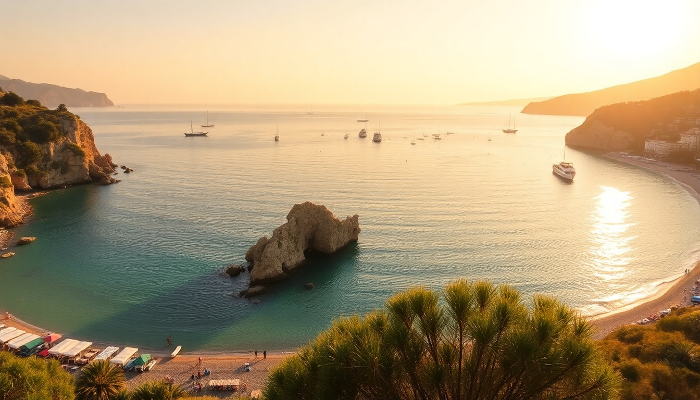

Best Beaches in Italy: Sardinia to Amalfi Coast Guide

I’ve spent the last three summers bouncing between Italian beaches, and I’ll be straight with you: the postcard photos rarely show the paid sunbeds, the pebbles that bruise your feet, or the 9 AM towel dash. This guide cuts through that. I’ll tell you which strips of sand are worth the ferry ride, which coves you can actually reach without a rental car, and where to eat nearby without paying resort prices. From Sardinia’s electric turquoise to Sicily’s rugged limestone, here’s what I learned.
What makes Sardinia’s beaches worth the flight?
Sardinia has the most absurd water I’ve seen in Europe—think crushed turquoise glass under direct sun. But it’s not a spontaneous trip. You need a car or a boat booking to reach the best spots.
- La Pelosa (Stintino): Postcard-perfect shallow water, but arrive by 8:30 AM or you’ll queue for parking. The sand is fine and white, and the water stays calf-deep for fifty meters. We rented chairs from L’Ancora—€25 for two with an umbrella, worth it for the shade.
- Cala Goloritzé (Baunei): This one requires a 45-minute hike down a rocky trail (no sandals) or a boat from Cala Gonone. The pebble beach is small—maybe forty people max—so go early. The sea stack in the middle makes every photo look fake.
- Spiaggia dei Conigli (Lampedusa): Technically off Sicily, but I’m including it because it’s Sardinia-level. Powdery sand, nesting sea turtles, and zero facilities. Bring water and a hat. The ferry from Porto Empedocle runs twice daily.
If you’re based in Cagliari, skip Poetto—it’s a city beach with murky water. Drive 40 minutes to Chia for proper clarity.
Is the Amalfi Coast actually swimmable, or just scenic?
The Amalfi Coast is more about dramatic cliffs and pastel villages than long sandy stretches. Yes, you can swim, but you’ll be doing it off pebble shores or paid lidos. Don’t come here expecting a Caribbean-style beach day.
- Marina Grande (Positano): The main beach is packed by 10 AM. We paid €30 for two loungers at La Sirenuse’s lido—overpriced, but the water access is easy and the view of the pastel houses is legit. Skip the public section; it’s crowded and the stones hurt.
- Fiordo di Furore: A tiny fjord-like inlet with a concrete slipway. Not really a beach, but the water is deep and cold. Go at 7 AM to have it to yourself. No services, so pack a towel.
- Spiaggia di Atrani: My favorite on the coast. Free, less crowded than Positano, and the village above has a bakery (Panificio Atrani) that sells the best sfogliatella I’ve had. The sand is dark volcanic grit—fine for lying on, annoying to rinse off.
For a full day, take the SITA bus from Amalfi to Vettica and walk down to the small lido there. It’s quieter and the owner runs a simple café with €3 limoncello spritzes.
Can you actually swim at Cinque Terre, or is it all rocks?
Cinque Terre is a hiking destination first, swimming second. The water is clear and clean, but every beach is either pebbles or concrete slabs. I’d still recommend a dip after a long trail day.
- Monterosso al Mare: The only proper sandy beach in the park. The free section near the train station gets slammed, but the lido at Bagno Marina offers loungers for €15 and a bar with decent panini. The water here is calm and shallow—good for kids.
- Riomaggiore: The small rocky cove at the marina is where locals jump in. No sand, just flat rocks. Bring water shoes or you’ll slip. The sunset light reflecting off the pastel buildings makes it worth the bruised soles.
- Vernazza: There’s a tiny pebble strip at the harbor, but it’s more of a splash zone. We swam there after hiking from Corniglia and used the public showers (€1 for 2 minutes). The water is deep immediately, so don’t take non-swimmers.
Best strategy: hike the Sentiero Azzurro trail in the morning, then cool off at Monterosso’s lido. Skip the Cinque Terre Card if you’re only swimming—it’s not worth it for beach access alone.
What are the best beaches in Sicily for avoiding crowds?
Sicily is huge, so you can find empty stretches if you avoid the package-tour zones. I spent a week driving the coast and these three stood out.
- Scala dei Turchi (Realmonte): A white limestone cliff that slopes into the sea—not a beach in the traditional sense, but you can wade along the base. Arrive by 8 AM to avoid the bus crowds. The water is shallow and warm. We parked at Bar Scala dei Turchi and walked five minutes.
- San Vito lo Capo: This is the closest Sicily gets to a Caribbean beach—fine golden sand, clear water, and a mountain backdrop. The town is touristy but functional. We ate at Cous Cous Fest’s off-season spot, Ristorante Cous Cous, and it was the best meal of the trip.
- Isola Bella (Taormina): A tiny island connected by a thin sandbar. It’s beautiful but packed by 10 AM. Go in late afternoon when the day-trippers leave. The Taormina-Giardini Naxos cable car drops you a ten-minute walk away.
For a truly quiet spot, drive to Cala Mosche near Marzamemi. It’s a long gravel road, but the water is glassy and there’s a single kiosk selling grilled fish on weekends.
When is the best time to visit Italian beaches without the crowds?
June and September are the sweet spots. July and August are chaos—especially in Sardinia and Cinque Terre.
- June: Water is warm enough (around 22°C), and the crowds haven’t peaked. We visited La Pelosa in mid-June and had space to spread out. Hotels in Positano were half the August price.
- September: The water is at its warmest (24-26°C), and the European school holidays are over. We stayed at Hotel Villa Franca in Positano for €180 a night in mid-September—€400 in August. The only downside: some lidos close after the first week.
- May: Risky for swimming (water is 18-20°C), but good for hiking and empty beaches. We did Cinque Terre in late May and had Monterosso’s lido to ourselves until noon.
Avoid August 15 (Ferragosto)—everything is packed and prices double. If you must travel then, book lido chairs a week ahead.
FAQ
Are Italian beaches free or do you have to pay? Most beaches have a free public section (spiaggia libera) and a paid lido section with loungers and umbrellas. The free areas are usually more crowded and less maintained. In Cinque Terre and the Amalfi Coast, lidos can cost €15–€40 per day for two chairs. In Sardinia, many coves are free but require a hike or boat access. Always check if the beach is private or public before laying your towel.
Do I need water shoes for Italian beaches? Yes, especially on the Amalfi Coast, Cinque Terre, and parts of Sardinia like Cala Goloritzé. Pebble and rock beaches dominate. Water shoes cost about €10 at Decathlon and save you from bruised soles and slipping on algae. I didn’t pack mine for Positano and regretted it after ten minutes on Marina Grande.
Can I visit these beaches without a car? Yes, but it’s harder. Sardinia’s best coves (like Cala Goloritzé) require a boat tour from Cala Gonone or a hike from the bus drop-off. The Amalfi Coast and Cinque Terre are better served by trains and ferries—the Trenitalia regional train connects all five Cinque Terre villages. For Sicily, renting a car is ideal for spots like Scala dei Turchi, but you can reach San Vito lo Capo by bus from Palermo.
Conclusion
- Sardinia has the clearest water, but you need a car or boat to access the best coves like La Pelosa and Cala Goloritzé—arrive early or pay for parking.
- The Amalfi Coast is more about scenic lidos than sandy beaches; Spiaggia di Atrani is the best free option, and Marina Grande is worth the lido fee for the view.
- Cinque Terre works for a quick swim after hiking, but only Monterosso al Mare has real sand—bring water shoes for the other villages.
- Sicily offers the most variety, from San Vito lo Capo’s golden sand to Scala dei Turchi’s unique limestone; June and September are the months to go.
- Pack water shoes, skip August, and always check if a lido requires reservations—especially in Positano and Monterosso.